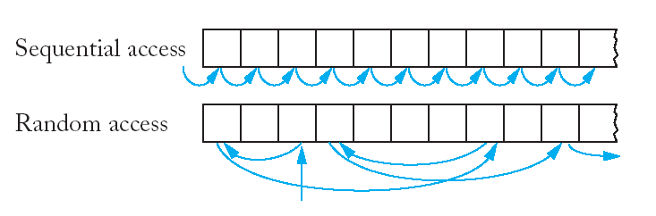

8. Потоци II
 Низови
(текстови) потоци.
Низови
(текстови) потоци.
В езика С++ има възможност да се чете/пише от/в
низове вместо да се използват стандартни устройства или файлове. В
заглавния файл sstream
са дефинирани обекти, функции и операции за работа с текстови
потоци.
* Входен поток - с обект от клас istringstream.
string input = "January 23, 1881";
istringstream instr(input);
string month;
int day;
string comma;
int year;
instr >> month >> day
>> comma >> year;
* Изходен поток - с обект от клас ostringstream.
ostringstream outstr;
outstr << setprecision(8)
<< sqrt(2);
string output = outstr.str();
Пример: Преобразуване на момент от време в низ. В САЩ има
два формата за записване на време с разлика в часовете:
- am/pm - денонощието започва с 12 am следват 1-11 am, 12 pm
и 1-11 pm.
- military - часовете са от 00 до 23.
// readtime.cpp
#include <iostream>
#include <sstream>
using namespace std;
string int_to_string(int n)
{ ostringstream outstr;
outstr << n;
return outstr.str();
}
void read_time(int &hours, int
&minutes)
{ string line;
getline(cin, line);
istringstream instr(line);
instr >> hours;
minutes = 0;
char ch;
instr.get(ch);
if (ch == ':') instr >>
minutes;
else
instr.unget();
string suffix;
instr >> suffix;
if (suffix == "pm") hours +=
12;
}
string time_to_string(int hours, int
minutes, bool am_pm)
{ string suffix;
if (am_pm)
{ if (hours < 12) suffix =
"am";
else { suffix =
"pm"; hours -= 12; }
if (hours == 0)
hours = 12;
}
string result =
int_to_string(hours) + ":";
if (minutes < 10) result =
result + "0";
result = result +
int_to_string(minutes);
if (am_pm) result = result + "
" + suffix;
return result;
}
int main()
{ cout << "Please enter the
time: ";
int hours, minutes;
read_time(hours, minutes);
cout << "Using
am/pm: " << time_to_string(hours, minutes,
true) << "\n";
cout << "Military time:
" << time_to_string(hours, minutes, false) <<
"\n";
return 0;
}
Please enter the time:
10:20 pm
Using am/pm:
10:20 pm
Military time: 22:20
|
Аргументи от
командния ред.
* Определение и използване.
Операционните системи UNIX и DOS могат да
предават данни от командния ред за стартиране на програма на С и
С++ на самата програма. За тази цел главната функция main може да има два
формални параметри - int argc и char* argv[]. Следващият
пример илюстрира тази възможност.
// simple.cpp
#include
<iostream>
using namespace std;
int main(int argc, char* argv[])
{
for (int i=0; i<argc; i++)
cout <<
"argv[" << i << "]=" << argv[i] <<
endl;
return 0;
* Шифър на Цезар.
Шифрирането се състои в замяна на буква от
даден (изходен) текст с друга буква, която се намира е след key
букви в азбуката. Дешифрирането на шифриран текст се състои във
възстановяване на изходното съобщение.
Програмта работи със следните аргументи от
командния ред:
- флаг -d (незадължителен) за работа на
програмата по дешифриране;
- флаг -k<число> (незадължителен) за
задаване на ключ (по подразбиране ключът е 3);
- име на входен файл;
- име на изходен файл.
// ceasar.cpp
#include <iostream>
#include <fstream>
#include <string>
#include <sstream>
using namespace std;
void usage(string program_name)
{ cout << "Usage: " <<
program_name
<< " [-d] [-kn] infile outfile\n";
exit(1);
}
void open_file_error(string
filename)
{ cout << "Error opening file "
<< filename << "\n";
exit(1);
}
int remainder(int a, int n)
{ if (a >= 0) return a % n;
else return n - 1
- (-a - 1) % n;
}
char encrypt(char ch, int k)
{ const int NLETTER = 26;
if ('A' <= ch && ch
<= 'Z')
return
static_cast<char>('A' + remainder(ch-'A'+k, NLETTER));
if ('a' <= ch && ch
<= 'z')
return
static_cast<char>('a' + remainder(ch-'a'+k, NLETTER));
return ch;
}
void encrypt_file(ifstream& in,
ofstream& out, int k)
{ char ch;
while (in.get(ch))
out.put(encrypt(ch, k));
}
int string_to_int(string s)
{ istringstream instr(s);
int n;
instr >> n;
return n;
}
int main(int argc, char* argv[])
{ bool decrypt = false;
int key = 3;
int nfile = 0;
ifstream infile;
ofstream outfile;
if (argc<3 or argc>5)
usage(string(argv[0]));
for (int i = 1; i < argc;
i++)
{ string arg =
string(argv[i]);
if (arg.length()
>= 2 and arg[0] == '-')
{ char option =
arg[1];
if
(option == 'd') decrypt = true;
else
if (option == 'k')
key
= string_to_int(arg.substr(2, arg.length() - 2));
}
else
{ nfile++;
if
(nfile == 1)
{
infile.open(arg.c_str());
if
(infile.fail()) open_file_error(arg);
}
else
if (nfile == 2)
{
outfile.open(arg.c_str());
if
(outfile.fail()) open_file_error(arg);
}
}
}
if(nfile != 2)
usage(string(argv[0]));
if (decrypt) key = -key;
encrypt_file(infile,
outfile, key);
infile.close();
outfile.close();
return 0;
}
Изпълнение на програмата:
>ceasar
>Usage: CEASAR.EXE [-d] [-kn] infile
outfile
|
Файл input.txt:
This is a text to encrypt
(1-st) and decrypt (2-nd).
One more line. End.
|
Изпълнение на програмата:
| >ceasar input.txt
encrypt1.txt |
Файл encrypt1.txt
Wklv lv d whaw wr hqfubsw
(1-vw) dqg ghfubsw (2-qg).
Rqh pruh olqh. Hqg.
|
Изпълнение на програмата:
| >ceasar -k7 input.txt
encrypt2.txt |
Файл encrypt2.txt
Aopz pz h alea av lujyfwa
(1-za) huk kljyfwa (2-uk).
Vul tvyl spul. Luk.
|
Изпълнение на програмата:
| >ceasar -d -k7
encrypt2.txt output.txt |
Файл output.txt
This is a text to encrypt
(1-st) and decrypt (2-nd).
One more line. End.
|
Произволен
(пряк) достъп.
Последователен достъп означава, че можем да четем/пишем от/във файл
само последователно - елемент след елемент, байт след байт.
Сега бихме искали да можем да четем и пишем на всяко място във
файла, което се нарича пряк или произволен достъп.

- включване на заглавен файл:
#include
<fstream>
- дефиниране на файлова променлива за четене и писане:
fstream fs;
Във всеки файл са дефинирани две срециални позиции:
- get - позиция за четене,
- put - позиция за писане.

- преместване на позициите за четене и писане:
long n = 10;
/* преместване на позицията за четене
10 байта след началото на файла */
fs.seekg(n,
ios::beg);
/* преместване на позицията за писане
10 байта след началото на файла */
fs.seekp(n,
ios::beg);
/* преместване на позицията за писане в
края на файла */
fs.seekp(n,
ios::end);
/* преместване на позицията за писане
10 байта напред относно текущата позиция */
fs.seekp(n,
ios::cur);
- намиране на текущите позициите за четене и писане:
long n;
n = fs.tellg();
n = fs.tellp();
Дължината на файл можем да получим по следния начин:
fs.seekg(0, ios::end);
long file_length = fs.tellg();
- файлове с променлива или фиксирана дължина на записа:
| Harry Hacker 500 |
Johny Johnson 600 |
Tedy Tompson 700.20 |
| 1234567890123456 |
12345678901234567 |
1234567890123456789 |
| Harry
Hacker 500 |
Johny
Johnson 600 |
Tedy
Tompson 700.20 |
| 1234567890123456789012 |
1234567890123456789012 |
1234567890123456789012 |
* Програма за четене на файлови записи, съдържащи име на служител
и заплата и промяна на заплатата на даден служител.
Примерен файл: employee.dat
// database.cpp
#include <iostream>
#include <iomanip>
#include <fstream>
#include <sstream>
using namespace std;
#include "ccc_empl.h"
const int NEWLINE_LENGTH = 2; /* или
1 за Unix */
const int RECORD_SIZE = 30 + 10 +
NEWLINE_LENGTH;
double string_to_double(string s)
{ istringstream instr(s);
double x;
instr >> x;
return x;
}
void raise_salary(Employee &e,
double percent)
{ double new_salary =
e.get_salary()*(1 + percent/100);
e.set_salary(new_salary);
}
void read_employee(Employee &e,
fstream &fs)
{ string line;
getline(fs, line);
if (fs.fail()) return;
string name = line.substr(0,
30);
double salary =
string_to_double(line.substr(30, 10));
e = Employee(name, salary);
}
void write_employee(Employee e,
fstream &fs)
{ fs << e.get_name()
<<
setw(10 + (30 - e.get_name().length()))
<<
fixed << setprecision(2)
<<
e.get_salary() << "\n";
}
int main()
{ cout << "Please enter the
data file name: ";
string filename;
cin >> filename;
fstream fs;
fs.open(filename.c_str());
fs.seekg(0, ios::end);
int nrecord =
fs.tellg()/RECORD_SIZE;
cout << "Please enter
the record to update: (0 - "
<< nrecord - 1 << ") ";
int pos;
cin >> pos;
const double SALARY_CHANGE =
5.0;
Employee e;
fs.seekg(pos*RECORD_SIZE,
ios::beg);
read_employee(e, fs);
raise_salary(e,
SALARY_CHANGE);
fs.seekp(pos*RECORD_SIZE,
ios::beg);
write_employee(e, fs);
fs.close();
return 0;
}
Файл data.txt преди
изпълнение на програмата:
Harry
Hacker 500
Johny
Johnson 600
Tedy
Tompson 777
|
Please enter the data file
name: data.txt
Please enter the record to
update: (0 - 2) 1
|
Файл data.txt след
изпълнение на програмата:
Harry
Hacker 500
Johny
Johnson 630.00
Tedy
Tompson 777
|